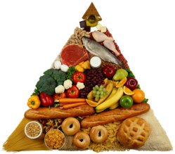

A healthy diet is varied and balanced. The food pyramid organizes how much of each food type one should eat according to its size on the pyramid. Healthy food pyramid and pregnancy This type of diet is suitable for incorporating into your healthy eating plan at any stage of your life including breastfeeding and pregnancy. Adjust servings according to your own caloric intake needs. Pregnant women generally require an additional 300 calories per day. Breastfeeding women generally require an extra 300-500 calories per day. The top of the pyramid consists of the least amount of servings and includes fats, oils, and sweets which should be used sparingly.A healthy way to eat is to go easy on fats and sugar added to foods in cooking or at the table such as butter, margarine, gravy, salad dressing, and sugar. Choose less from foods that are high in sugar such as candy, desserts, and sugary drinks. Also choose lower fat and lower sugar foods from the other five food groups often. The next level contains milk, yogurt, cheese, meat, poultry, fish, dried beans, eggs, and nutsChoose skim milk and nonfat yogurt often as they are lowest in fat. Choose "part skim" or low fat cheeses when available and lower fat milk desserts, like ice milk or frozen yogurt. Read labels. Choose lean meat, poultry without skin, fish, and dry beans and peas often as they are the choices lowest in fat. Prepare meats in low fat ways by trimming away all the fat you can see, removing skin from poultry, and broiling, roasting, or boiling instead of frying them. Nuts and seeds are high in fat, so eat them in moderation. The third level of the healthy food pyramid contains vegetables and fruits Choose fresh fruits, fruit juices, and frozen, canned, or dried fruit. Go easy on fruits canned or frozen in heavy syrups and sweetened fruit juices. Eat whole fruits often as they are higher in fiber than fruit juices. Count only 100 percent fruit juice as fruit. Punches and most fruit "drinks" contain only a little juice and lots of added sugars. Eat a variety of different types of vegetables as each type provides different nutrients. Include dark-green leafy vegetables and legumes several times a week as they are especially good sources of vitamins and minerals. Legumes also provide protein and can be used in place of meat. Go easy on the fat you add to vegetables at the table or during cooking. Butter, mayonnaise, and salad dressing, count as fat. The bottom level of the healthy food pyramid contains the largest number of servings made up of bread, cereal, rice and pasta Choose several servings a day of foods made from whole grains in order to get the fiber you need. Most often choose foods that are made with little fat or sugars, like bread, English muffins, rice, and pasta. Take care with the fat and sugars you add as spreads, seasonings, or toppings. When preparing pasta, stuffing, and sauce from packaged mixes, use only half the butter or margarine suggested; if milk or cream is called for, use low fat milk. Your breastfeeding or pregnancy or ANY diet's total daily food intake needs to include a variety of foods from each group. The healthy food pyramid represents the minimum number of daily servings recommended.  The Food PyramidThe breastfeeding diet is based on the healthy food pyramid.A healthy diet is varied and balanced. The food pyramid organizes how much of each food type one should eat according to its size on the pyramid. Your diet's total daily food intake needs to include a variety of foods from each group. The pyramid represents the minimum number of daily servings recommended. The table below presents the minimum daily servings and serving ideas recommended for both the non-pregnant woman and the pregnant or breastfeeding diet. Food Pyramid Recommendations for Women | FOOD GROUP | Non Pregnant Woman - 1900 calories | Pregnant or Breastfeeding- 2200 calories | Menu Suggestions | | Milk products | 2 | 3 | 1 cup low fat milk or yogurt 1 1/2 oz.cheese 1cup pudding 1 1/4 cup low fat ice cream 2 cups cottage cheese 1 cup tofu | | Meats & meat substitutes | 5-7 ounces | 7 ounces | Cooked lean meat, fish, or poultry Cheddar cheese 1/2 cup cottage cheese 1 cup dried beans or peas 4 tbsp. peanut butter | | Eggs | 1 | 1-2 | - | | Fruits | 2-4 | 3-4 | [include choices rich in vitamin C] 1/2 cup cooked or juice 1 cup raw 1 medium sized fruit | | Vegetables | 3-5 | 4-5 | [choose from a wide variety of dark leafy and starchy, variety is good] 1/2 cup cooked 1 cup raw | | Grains | 6-11 | 9-11 | [Choose from whole grain, fortified, or enriched] 1 slice bread 1 cup cereal 1/2 cup cooked cereal or pasta |
|